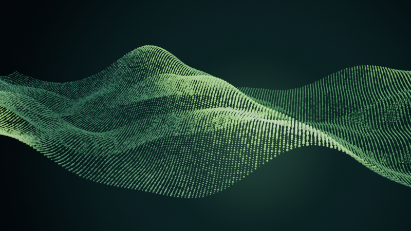
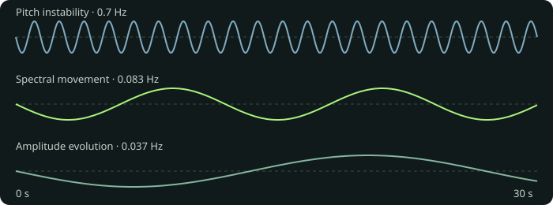
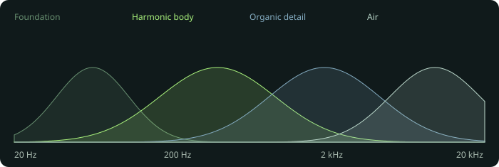

Creating Evolving Ambient Textures
Explore modulation, layering and movement to create rich, evolving soundscapes.
A sustained sound can hold attention without a melody, a beat or even a change of chord. What matters is how its internal relationships change over time. A narrow band of noise can gradually reveal a harmonic colour; a distant resonance can move into focus; a stable drone can acquire an almost physical sense of movement.
Ambient textures can begin with a synthesizer, a field recording or a processed acoustic instrument. This article focuses on the decisions that turn any of these sources into an evolving soundscape: modulation, layering, spectral balance and space.
01. Texture as musical material
In a conventional melodic phrase, changes in pitch often carry the narrative. In a texture, the narrative can be carried by changes in the sound itself. Imagine a sustained chord that begins with only its fundamental frequencies, slowly reveals upper harmonics, then recedes into a diffuse field of reflections. Its harmony remains fixed, yet its apparent distance, brightness and weight change.
Start with a sustained voicing of D, A, C and E. The open fifth establishes a foundation while the seventh and ninth introduce colour without specifying a major or minor third. Compare the two versions below. They use the same pitches and similar levels; the evolving version introduces slow filtering and slight pitch fluctuations. Listen for the way the upper frequencies appear and disappear rather than for a new musical event.
A useful distinction is between movement and activity. Adding notes increases activity, but a gradual change in the balance of existing partials can produce movement with almost no additional events. This makes texture a compositional material in its own right.
02. Designing organic movement
A low-frequency oscillator (LFO) changes a parameter periodically. Its rate determines how often the movement repeats, its depth determines the extent of the change, and its waveform determines how that change unfolds. A sine wave is smooth; a triangle changes at a more constant rate; a random source with smoothing can wander without abrupt steps.
Rather than assigning the same LFO to every parameter, work at several time scales. A shallow pitch fluctuation at 0.7 Hz can add instability, a filter movement at 0.083 Hz takes about twelve seconds per cycle, and an amplitude movement at 0.037 Hz takes about twenty-seven seconds. These rates are intentionally different. The texture does not brighten, swell and drift in pitch at exactly the same moment.

Depth is often more important than complexity. A pitch movement of a few cents may be enough to disturb a perfectly stable oscillator. A large pitch deviation can instead become an obvious vibrato. Likewise, a filter sweeping through the entire audible range may dominate the texture, whereas a narrow sweep around an interesting resonance can reveal details gradually.
Try modulating the rate of one LFO with another. For instance, let a very slow modulation vary the speed of a filter LFO between 0.04 and 0.12 Hz. The filter still moves smoothly, but its movement accelerates and decelerates. The sound acquires variation at the level of its own behaviour, not just its instantaneous parameters.
When designing long textures, listen for recurring coincidences. If several changes always occur together, they may create an unintended rhythmic accent. Independent rates and small differences in phase are often enough to loosen that pattern. Randomness can help, but it is not a requirement.
03. Layering and spectral balance
A rich soundscape does not necessarily require many layers. Four sounds occupying the same register, moving at the same speed and sharing the same spatial position can produce less clarity than two sounds with complementary roles.
Begin with a low foundation, then introduce a harmonic body above it. Add a layer of filtered noise or irregular particles only if the texture needs a different type of detail. A high layer can suggest air without competing with the low foundation. These roles are not strict frequency bands; the aim is to avoid unnecessary masking while retaining enough overlap for the layers to feel connected.

Balance also exists in time. A layer that is constantly audible occupies attention continuously. A quieter layer that appears for a few seconds and disappears can give the listener something to discover. Automating its level independently from the main body may be more effective than adding another instrument.
When a mix feels congested, mute a layer before reaching for an equalizer. If the sound becomes clearer without losing any essential character, that layer may have been redundant. If something important disappears, identify the missing quality and decide whether it can be restored with less spectral or temporal competition.
04. Sculpting time and space
Reverb and delay are often used to place a finished sound in an environment. In ambient sound design they can become sources of material themselves. Send a short pluck or a filtered noise burst into a long reverb, then remove the dry signal. The tail retains aspects of the original spectrum while losing much of its attack. Resampling that tail and filtering it again can create a new sustained layer.
Pre-delay separates the onset from its reflections. A longer gap can preserve the clarity of a foreground event, while a short gap can blend it into its surroundings. Filtering the wet signal can prevent low-frequency buildup and soften high-frequency reflections. A long decay alone does not guarantee depth: the relative level, spectrum and timing of the dry and wet signals matter.
Delay can introduce a different kind of continuity. Several quiet echoes with distinct timings can suggest a pattern that was absent from the original sound. Filtering the feedback path lets successive repetitions change colour. Keep feedback controlled to avoid uncontrolled accumulation.
Granular processing offers another way to work with time: overlapping short fragments of a recording can extend a moment while preserving some of its internal detail. Grain size, density and position determine whether the result feels continuous or particulate. These techniques are most useful when chosen for a specific role, rather than added indiscriminately.
| Technique | Creative function |
|---|---|
| Filtering | Reveal or conceal spectral detail. |
| Chorus | Introduce small time and pitch differences. |
| Delay | Create temporal traces and overlapping events. |
| Reverb | Diffuse attacks and extend their presence. |
| Granular processing | Extend and reorganize short fragments. |
| Saturation | Introduce harmonics and alter spectral density. |
05. Building a living soundscape
The following instrument brings these principles together. Start with the low foundation, then activate the harmonic body. Introduce independent spectral modulation, followed by the irregular particles and spatial diffusion. Let the sound develop for at least thirty seconds before deciding whether a layer is necessary.
Listen to the foundation and harmonic body without modulation first. Then enable spectral movement: the pitches remain the same, but their brightness changes. Add the particles and notice how brief irregular events contrast with sustained material. Finally, enable spatial diffusion and compare the sense of continuity between those events.
Try subtracting rather than adding. Remove the low foundation while keeping the other layers active. Does the space feel lighter? Disable the particles and listen for the loss of small temporal landmarks. These comparisons help identify the role each layer plays.
In your own project, begin with one source and develop three complementary versions: a stable foundation, a slowly moving spectral layer and a sparse detail layer. Assign independent modulation rates and reserve a separate return for spatial effects. Record a minute of evolution, then listen without adjusting anything. Mark the moments where the texture develops a new character and use those moments as material for a longer composition.
There is no obligation to fill every moment. A soundscape can be rich because of what it reveals gradually, not because every possible layer is audible at once. Compose the relationships between sounds, their movements and the traces they leave behind.